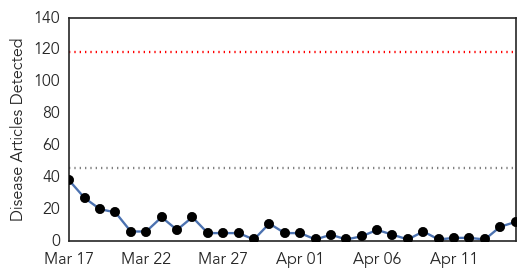
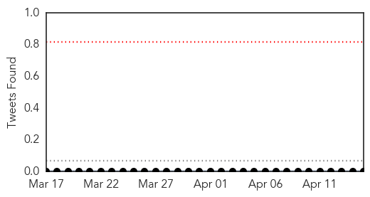
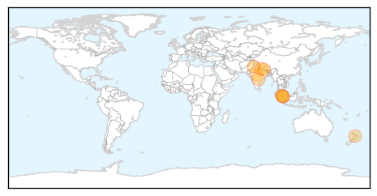

Toggle navigation
Early Warning
Daily Alerts
Swine Flu
Apr 15, 2015
Compare to:
-
Dengue Fever
Hemmorhagic Fever
Mold/Fungal Infection
Influenza
Meningitis
Pertussis / Whooping Cough
Middle East Respiratory Syndrome
Cholera
Hepatitis
Chikungunya
Yellow Fever
Bubonic Plague
West Nile Virus
Ebola
Measles
Unknown
Mumps
30 Day Trends
Web: 0
alerts
, 0
warnings
Twitter: 0
alerts
, 0
warnings
Top Articles:
1.000
The Brief Blog Archive Jajarkot schools closed
0.998
Failure to report presence of swine flu patient, PHC moved to take action against private hospital
0.986
Health Ministry sends task force team to Malacca
0.975
Contain swine flu outbreak
0.956
‘Lost our chance’ to confirm if Malacca boy died from H1N1, health minister admits
0.955
Call for pregnant women to get flu jabs
0.949
FNJ Calls on Govt to Contain Epidemic
0.941
Fowl being culled after bird flu outbreak near Hyderabad
0.926
H1N1 under control: Subramaniam
0.850
Girl dies, 12 pupils show signs of HFM disease
0.843
After Swine, Now Comes The Bird Flu
0.726
Development of an antibody for flu and pneumonia
Top Tweets:
No tweets found for Apr 15, 2015
Web/News Articles

Tweets

Article Locations

Article Confidences